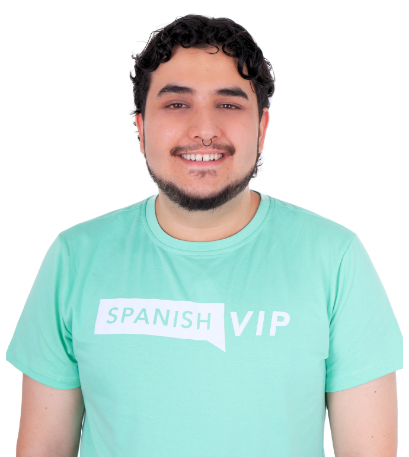
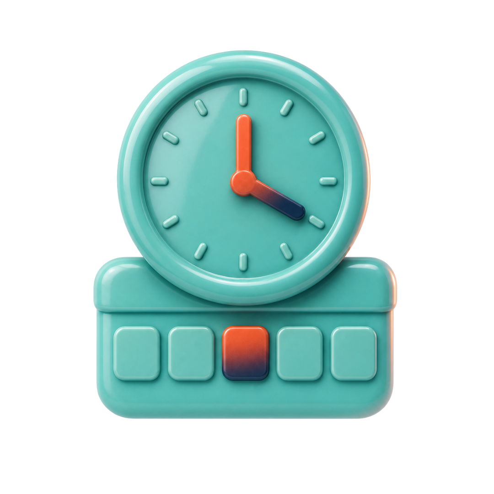

What's your Spanish level?
Eight questions that get harder as you go. In five minutes you'll know where you stand, from beginner to advanced, and exactly what to practice next.

Mateo C. · Native teacher, Medellín · Updated Jun 9, 2026
{{ prompt }}
How the test works
A quick placement check, not a certificate. Built by our teachers from the questions they use in a first class.
Grammar, vocabulary and reading, scored separately.
Two questions per level, A1 through B2.

Five minutesInstant result. Nothing to sign up for.
What each level means
The CEFR scale in plain English.
"Most self-taught learners read a level higher than they speak. Treat your result as a reading score, then test your speaking in a real conversation."
Questions learners ask
How accurate is an 8-question test?+
Accurate enough to place you within a level. A teacher can confirm it in a 10-minute conversation.
Is this an official DELE or SIELE result?+
No. It uses the same CEFR scale, but it's a placement check, not a certificate.
How long does it take to move up a level?+
Roughly 150–200 hours of study and practice per level, less with regular speaking practice.
Can I retake it?+
Anytime. Retake it every month or two to track your progress.